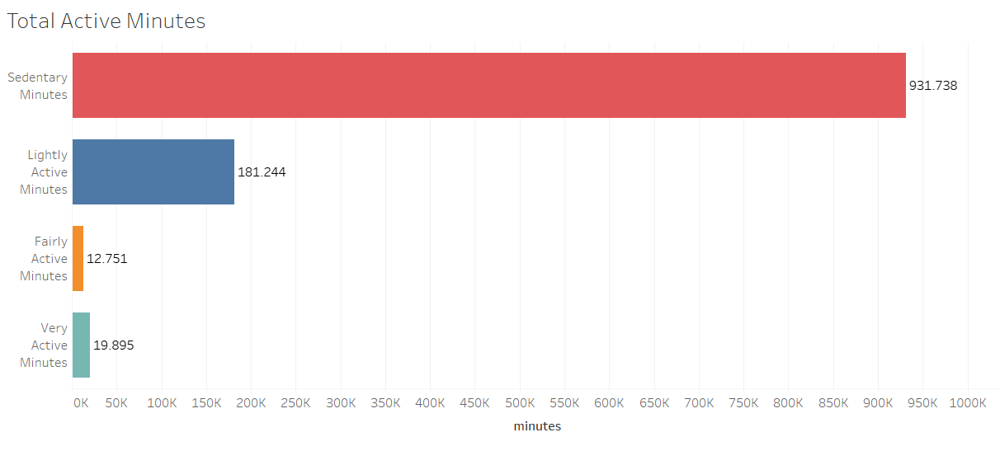
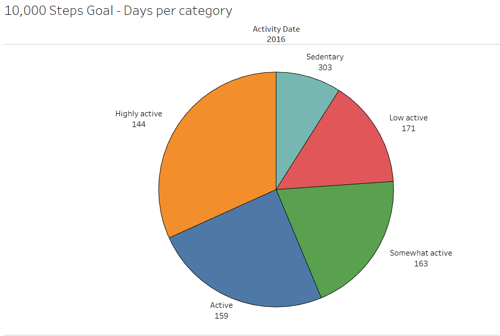
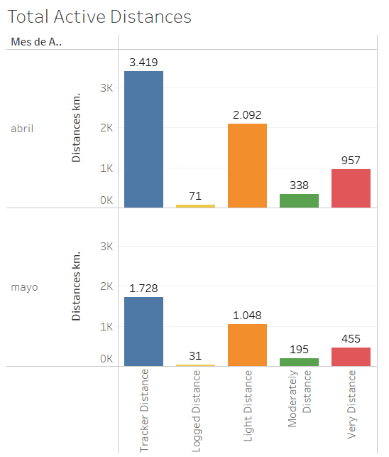

Coursera Case Study
Table of Contents
1. Summary
2. Ask Phase
2.1 Business Task
3. Prepare Phase
3.1 Dataset used
3.2 Accessibility and privacy of data
3.3 Information about our dataset
3.4 Data organization and verification
3.5 Data credibility and integrity
4. Process Phase
4.1 Cleaning and formatting
5. Analyze and Share Phase
5.1 Measuring activity by minutes
5.2 Measuring the activity by steps
5.3 Measuring the activity by the distance registered
6. Conclusion (Act Phase)
1. Summary
Bellabeat is a high-tech company founded by Urška Sršen and Sando Mur. They manufacture health-focused smart products that collect data on activity, sleep, stress, and reproductive health to empower women with knowledge about their health and habits. Since it was founded in 2013, Bellabeat has grown rapidly and quickly positioned itself as a tech-driven wellness company for women.
Bellabeat products became available through a growing number of online retailers and their e-commerce channels on their website.
Bellabeat wants to focus on and analyze smart device usage data to gain insight into how people are already using their smart devices. With the information gained, Bellabeat wants some recommendations for how these trends can improve their marketing strategy.
We will focus on their Bellabeat app and Bellabeat trackers. The Bellabeat app with the tracker provides users with health data related to their activity, sleep, stress, menstrual cycle, and mindfulness habits. This data can help users better understand their current habits and make healthy decisions.
2. Ask Phase
It´s time to do a little research about Bellabeat, including how they started the business, their motives, their products, and who their clients are. Know the composition of the company and what they expect for the future.
2.1 Business Tasks
We are asked to analyze the use of other smart devices to find trends and apply insights to Bellabeat’s marketing strategy.
2.2 Stakeholders
Urška Sršen and Sand Mur-Bellabeat co-founders
Bellabeat Marketing Analytics team
3. Prepare Phase
3.1 Dataset used:
The data used for this study was provided by Mobius, a user from Kaggle. The dataset is called FitBit Fitness Tracker Data (CC0: Public Domain). This dataset contains a personal fitness tracker from thirty Fitbit users.
3.2 Accessibility and privacy of data:
This is open-source, so the data can be copied, modified, distributed, and performed, even for commercial purposes, all without asking permission.
3.3 Information about our dataset:
These datasets were generated by respondents to a distributed survey via Amazon Mechanical Turk between December 3, 2016, and December 5, 2016. Thirty eligible Fitbit users consented to the submission of personal tracker data, including minute-level output for physical activity, heart rate, and sleep monitoring. Variation between outputs represents the use of different types of Fitbit trackers and individual tracking behaviors and preferences.
3.4 Data Organization and Verification:
The data is composed of 18 .csv files. Each file has data collected by Fitbit. The data consists of rows for each user ID record, the data is tracked by day and time. Every user has a unique ID.
The .csv dataset files are:
- dailyActivity_merged
- dailyCalories_merged
- dailyIntensities_merged
- dailySteps_merged
- heartrate_seconds_merged
- hourlyIntensities_merged
- hourlySteps_merged
- minuteCaloriesNarrow_merged
- minuteCaloriesWide_merged
- minuteIntensitiesNarrow_merged
- minuteIntensitiesWide_merged
- minuteMETsNarrow_merged
- minuteSleep_merged
- minuteStepsNarrow_merged
- minuteStepsWide_merged
- sleepDay_merged
- weightLogInfo_merged
All of the datasets have 33 IDs; the data was collected from 12/04/2016 to 12/05/2016. The datasets have different types of data, like dates and numbers, separated into different columns.
3.5 Data Credibility and Integrity:
It is important to clarify that the sample is a bit small. We don´t know the age of the Fitbit users; this can help us understand a little bit more about the data we are working with. Also, the data was last updated three years ago. These limitations can lead to sample bias.
4. Process Phase
I will work with Excel to clean the data and use the pivot tables to analyze it to help me understand the data and reach key conclusions. All the data will be merged into a file called “bellabeat_analysis.xlsx”.
Once the data is clean and organized, I will use Tableau to create the visualizations to represent our findings and share them with our stakeholders.
4.1 Cleaning and formatting
Now that the new file has been created, “bellabeat_analysis.xlsx”, I am going to start merging the datasets to clean and format them. Let´s detail the procedure:
- Imported database from dailyActivity_merged.csv
- A copy of the tab was created to be able to work with the numbers and not affect the original, in case any data needs to be recovered.
- Distances were rounded to 3 decimal places to facilitate numerical operations.
- The values in minutes were left as they were; only the number format was applied to them for future operations.
- It was verified that the data between the “TotalDistance” and “TrackerDistance” columns are equal. Used conditional formatting and duplicate values. Since the values are similar, the “TotalDistance” column was eliminated.
- The “SedentaryActiveDistance” column was eliminated because, due to its low values, it does not contribute to the study.
- It was identified that the format of the values in the “LoggedActivitiesDistance” column was not numerical, so the format was corrected using the =VALUE() function. The days in which there was activity with registration were then counted.
- The procedure from step 1 was repeated for the columns “VeryActiveDistance”, “ModeratelyActiveDistance”, “LightActiveDistance” and “SedentaryActiveDistance”.
- Although values of 0 are generally not taken into account, as we are referring to a health wellness company, it is important to know how many days no user activity was recorded.
- It was observed that several activities with registration were not logged. The formula =COUNTIF() was applied to know the number of days that presented records out of a total of 940. Only 32 records were found, so we have a total of 908 null records, which represents 96,60%, where the company does not have specific tracking per user since that user was not logged in at the time of the activity.
- The numbers in the tables were formatted so that they appear with three decimal places and can be read as 123,100, which would be one hundred and twenty-three kilometers with 100 meters.
- A pivot table was created in a new tab with the name “TD.dailyActivity” for easier work. With dynamic tables, we are going to measure the average steps and calories. Let's take the different tables for this.
- When putting together the pivot table, we can see that the distance records decreased in the three categories: “VeryActiveDistance”, “ModeratelyActiveDistance”, and “LightActiveDistance” from April to May.
- It can be observed by obtaining the averages that the greatest distance traveled is recorded in the “LightActiveDistance” activity.
- Using the conditional format, I analyzed the activity records that were below average. To know if the exercise is less We have a total of 33 records; the average number of records is 16, and the results are as follows:
- VeryActiveDistance = 21, representing 63.64%
- ModeratelyActiveDistance = 19, represents 57.58%
- LightActiveDistance = 17, which represents 51.52%.
- TrackerDistance = 16, which represents 48.48%.
- I want to point out that cases below average were highlighted as exceptional because they are the only ones. This can mean that the person has recently started doing an activity. Also, it is noticed that It started on the same date as everyone else, but then there are no more records, so the product or activity may not have been to your liking.
- We analyzed records in which there was no activity because there were records of calories and a sedentary lifestyle.
- In the steps table, we are going to calculate the average number of steps for each month of registration, knowing those records that were above the average.
- The WeightLogInfo_merged.csv database was imported.
- Fixed formatting of numeric values.
- The date format was corrected.
- After analyzing the table, it will be kept for future analysis, but it will not be taken into account on this occasion.
- Imported sleepDay.csv database
- The date format was corrected.
- I corrected the formatting of the “TotalSleepRecords”, "TotalMinutesAsleep”, and “TotalTimeInBed” columns.
- Two columns were created to identify the hours representing the minutes expressed in the “TotalMinutesAsleep” and “TotalTimeInBed” columns. The new columns were named “HoursAsleep” and “HoursInBed.” The reason is to be able to better measure the rest times.
- The HourlyIntensities_merged.csv database was imported.
- A copy of the sheet was created so we could work on cleaning the data. It was removed once the cleaning was completed.
- The values in the “AverageIntensity” column were rounded to two decimal places.
- It was detected that there were date values that were not correct, so their format was corrected. Dates are now in the correct format and can be filtered without problems.
- Imported database dailyIntensities_merged.csv
- A copy of the dataset was created so we could work on cleaning the data.
- The date data has been corrected, and now filters can be applied without problems.
- The columns “LightActiveDistance”, “ModeratelyActiveDistance”, “VeryActiveDistance” and “SedentaryActiveDistance” were removed. They were analyzed in the “dailyActivity” tab.
- A pivot table was created in a new tab with the name “TD.dailyIntensities” for easier work. With the pivot table, I am going to measure the average number of minutes for each type of activity.
- When assembling the pivot table, we can see that the records in minutes are much higher in the “SedentaryMinutes” column and then decrease in the following categories: “LightlyActiveMinutes”, “FairlyActiveMinutes” and “VeryActiveMinutes” from April to May.
- With conditional formatting, I analyzed the activity records that were below average. First, I calculated the average number of records to know if the exercise records were less than the average. These are the results:
- SedentaryMinutes = 18, representing 54.55%
- LightlyActiveMinutes = 16, which represents 48.48%.
- FairlyActiveMinutes = 20, which represents 60.61%.
- VeryActiveMinutes = 22, which represents 66.67%.
- HourlySteps_merged database imported
- A copy was created to work on cleaning the data and fixing the cell value formats.
- For the hour values, I used the formula =TEXT(C2;"h:mm:ss")&" "&D2, thereby unifying the time values with AM/PM. When the values were obtained, the formula =HOURNUMBER() was used. The values in the text were converted to numbers, and then the values were copied and pasted into a different column. The cell format was corrected to the time format, and the values were placed at the corresponding time. Then the values were cut and pasted into the ActivityHour column, thus achieving the 24-hour format for all time values. This allows for better analysis in the future.
- The dates were transformed into days of the week to determine the days of most significant activity.
- A pivot table was created to know the hours of people's activity.
5. Analyze Phase and Share Phase
Now that the data has been cleaned and formatted, I´m going to use Tableau to analyze and visualize the data. Also, to reach some conclusions about what the data has to show.
5.1 Measuring activity by minutes
The purpose of measuring the activity in minutes is to know what kind of activity the users realize. We are going to sum up the total of the minutes dedicated to each kind of activity. This helps us understand the type of activity that users spend the most time on.
For this approach in Tableau, we are going to create a bar chart using the values from the columns “SedentaryMinutes”, “LightlyActiveMinutes”, “FairlyActiveMinutes” and “VeryActiveMinutes”.

We can appreciate that the users dedicated most of their time to sedentary activities.
5.2 Measuring the activity by steps
We are going to measure the activities according to the recommended 10,000-step goal. This data is from the following article: https://www.10000steps.org.au/articles/healthy-lifestyles/counting-steps/
They classify the activity in the following way:
- Sedentary is less than 5,000 steps per day.
- Low active is 5,000 to 7,499 steps per day.
- Somewhat active is 7,500 to 9,999 steps per day.
- Active means more than 10,000 steps per day.
- Highly active is more than 12,500.
For this method, it was necessary to create the categories manually. In Tableau, I built a calculated field with the following legend:
IF[Total Steps] < 5000 THEN "Sedentary"
ELSEIF [Total Steps] >= 5000 AND [Total Steps] <= 7499 THEN "Low active"
ELSEIF [Total Steps] >= 7500 AND [Total Steps] <= 9999 THEN "Somewhat active"
ELSEIF [Total Steps] >= 1000 AND [Total Steps] <= 12499 THEN "Active"
ELSE "Highly active"
END
This condition is going to classify the data stored in the column “Total Steps” into those categories. So all the user's records are going to be classified in those categories, giving us the following result:
- Sedentary: 303 records with a total of 644,835 steps.
- Low active: 171 records with a total of 1.071.184 steps.
- Somewhat active: 163 records with a total of 1.422.386 steps.
- Active: 159 records with a total of 1.761.049 steps.
- Highly: 144 records with a total of 2.280.182 steps.

We can appreciate the total number of steps and how many records each category has. Again, the sedentary category has the most user records.
5.3 Measuring the activity by the distance registered
Let´s figure out the distances that are registered by the users. On this occasion, I am going to create a bar chart by using the data from the columns “VeryActiveDistance”, “ModeratelyActiveDistance”, “LightActiveDistance”, “TrackerDistance” and “LoggedActivitiesDistance”.
The data is going to be divided by the dates and registered, with the totals divided by month. The purpose is to know if there is a variation in the records from one month to the next.

With the result of the comparison, we can see that the registrations decrease from one month to the next.
6. Conclusion (Act Phase)
Let´s remember that Bellabeat is a company that wants to develop wearables and accompanying products that monitor biometric and lifestyle data to help women better understand how their bodies work and make healthier choices.
With this in mind and with the analysis already made, it´s time to share our findings with our stakeholders. We advise and encourage Bellabeat to start creating their database with the information of their trackers and users. The database is needed to differentiate between different age groups because different actions to be taken will depend on this. They are going to have better information to help them make better data-driven decisions.
Let´s take a look at our recommendations to boost their marketing strategy:
- Most of the data demonstrates sedentary activity; we saw it in the minutes dedicated to the activity and in the steps. Also, we saw that the distance decreased from one month to the next. We recommend Bellabeat create a consistent plan for its users, not like 10,000 steps a day, but one with more consistent activity that allows its users to meet a possible goal daily. This will encourage their new users to commit to the activity. Remember sometimes when one starts doing exercise at first, it´s difficult to stay on track. They can use a slogan to capture attention and motivate their users, like “Don´t rush; the change is step by step; enjoy your ride”.
- Another recommendation to help your users reach their goals is to create incentives where they can gain points to win trophies and move up categories while increasing their activity levels. It is not recommended to use a rewards system like discounts on other Bellabeat products; this can lead to cheating, especially the tracker distance.
- It´s important to differentiate between different age groups. This is because most studies agree that the 10,000-step goal is not universally appropriate across all ages. The current activity levels and fitness goals should be adjusted according to the users. Remember, we don´t scare new users with high goals. It´s important to create consistency with the activity.
- To keep the users consistent with their goals, you can create push notifications for the app to remind them to take time for their activity. Also, you can sync up with the user calendar. Also, heart rate is essential, especially to detect early heart problems. It wouldn´t be a bad idea to add an alert when the heart reading is not correct.
In our analysis, I didn´t consider the sleep data, but in the future, it is important to consider this kind of information to keep track of how users are sleeping. Various studies agree that resting well helps to stay focused during the day.
I also didn´t consider the calorie data; we all agree this is important. But you can develop in the app a function to register the calories consumed during meals and compare them with the calories burned during exercise.
To finish our analysis, we recommend developing a pedometer that is water-resistant or getting charged with the sun. I couldn´t find the details of the ones you sell online.